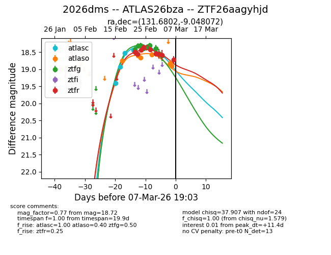
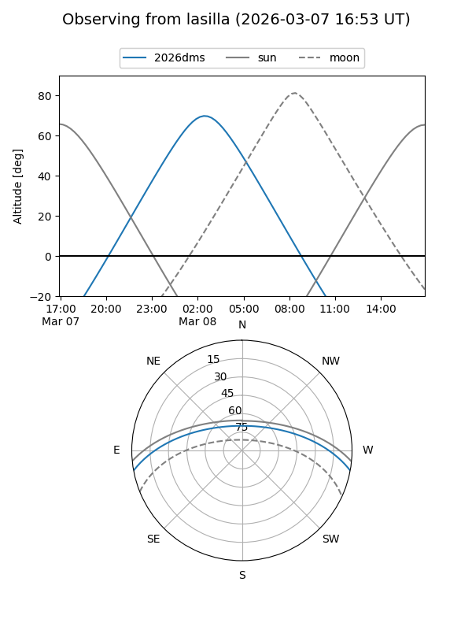
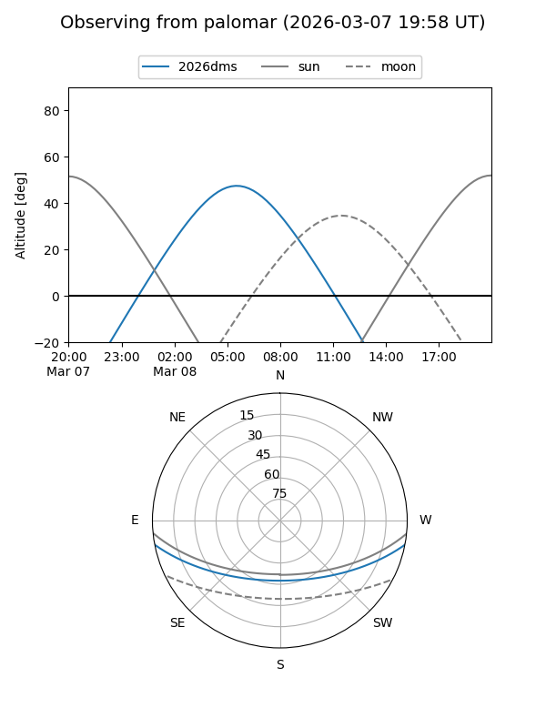
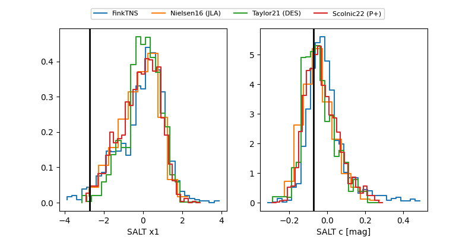

2026dms
Target 2026dms at 2026-03-07 19:05
Aliases and brokers:
FINK: link
Lasair: link
ALeRCE: link
TNS: link
YSE: link
alt names
ZTF26aagyhjd (ztf,fink_ztf)
2026dms (tns,yse)
ATLAS26bza (atlas)
Coordinates:
equatorial (ra, dec) = 131.6802,-9.04807
equatorial (HMS+DMS) = 08:46:43.24,-09:02:53.06
galactic (l, b) = (235.3558,+20.60901)
Flags:
Photometry:
last atlasc=18.43, atlaso=18.90, ztfg=18.59, ztfr=18.72
4 atlasc, 6 atlaso, 9 ztfg, 9 ztfr detections
Lightcurve

Visibility


Additional plots
